MD
CENTRAL SYNC & SCORECARD
ฉบับสมบูรณ์ · Syncfusion Tailwind 3 Dual Theme
Enterprise Operational Manual
คู่มือการใช้งานระบบ
Man-day Scorecard
คู่มือภาพประกอบทุกหน้าจอฉบับสมบูรณ์ ครอบคลุมการคำนวณคะแนนและดัชนีชี้วัด Man-day,
ฮับบริหารงานกลาง (Work Hub), กระดานคัมบัง, ไทม์ไลน์ Gantt, การซิงก์ OpenProject & GitLab,
และศูนย์วิเคราะห์อัจฉริยะ Python Analytics Intelligence Hub
20 หน้าจอครบถ้วน
โหมดสว่าง & โหมดมืด (Zero-Reload)
ระบบสิทธิ์ 3 ระดับ (Admin / Lead / Member)
OpenProject & GitLab Real-time Sync
Python Analytics Anomaly Detection
ทีมพัฒนาระบบ: Man-day Scorecard Core Team
แพลตฟอร์ม: Angular 22.2.6 · NestJS · PostgreSQL · Docker
วันที่ปรับปรุง: พฤศจิกายน 2568
ระบบแบ่งออกเป็น 4 หมวดหมู่หลัก ครอบคลุมมุมมองบริหารงาน, มุมมองพนักงาน, การวิเคราะห์ขั้นสูง, และการตั้งค่าระบบ:
หมวดที่ 1: การเข้าใช้งานและแดชบอร์ด
1. เข้าสู่ระบบ & สลับสิทธิ์พนักงาน/login
2. แดชบอร์ดทีม (Team Dashboard)/team
3. สถิติย้อนหลัง (KPI Snapshots)/team (Snapshots)
4. พื้นที่ส่วนตัวของฉัน (My Workspace)/me
5. กระดานคะแนนพนักงานทั้งทีม/people
6. แดชบอร์ดพนักงานรายคนแบบต่อเนื่อง/people/:id
หมวดที่ 2: ฮับบริหารงาน (Work Hub)
7. สรุปสถานะงาน (Work Summary)/work/summary
8. ไทม์ไลน์งาน & แม่ลูก (Gantt)/work/timeline
9. คลังงานรอวางแผน (Backlog)/work/backlog
10. กระดานคัมบัง (Kanban Board)/work/board
11. หน้าต่างแก้งาน & ประวัติ (Card Dialog)/work/board (Edit)
12. รายการงานทั้งหมด (Work List)/work/list
หมวดที่ 3: คะแนน กาลเวลา และการวิเคราะห์
13. ตารางคะแนนใบงานฉบับเต็ม/tickets
14. ปฏิทินและไทม์ไลน์ทีม (Schedule)/schedule
15. ติดตามงานวิจัย AI & Spike/ai
16. ศูนย์วิเคราะห์อัจฉริยะ (Analytics)/analytics
หมวดที่ 4: การเชื่อมต่อ การตั้งค่า และ UI
17. เชื่อมต่อ OpenProject, GitLab, Teams/integrations
18. จัดการสิทธิ์ เกณฑ์คะแนน & Audit Log/admin
19. การสลับโหมดสว่างและโหมดมืดAppBar Toggle
20. ค้นหาแจ้งเตือน & Desktop Mini-SidebarShell Controls
กติกาหลักของระบบ: 1 Man-day (MD) = 6 ชั่วโมงทำงานมาตรฐาน · แยกสายคะแนนระหว่าง Implement (เน้นส่งมอบตรงเวลาและ DoD) กับ R&D (เน้นงานวิจัย นวัตกรรม และ Spike) · สิทธิ์ของระบบแยกชัดเจนระหว่างผู้บริหาร (Admin), หัวหน้างาน (Lead), และผู้ปฏิบัติงาน (Member)
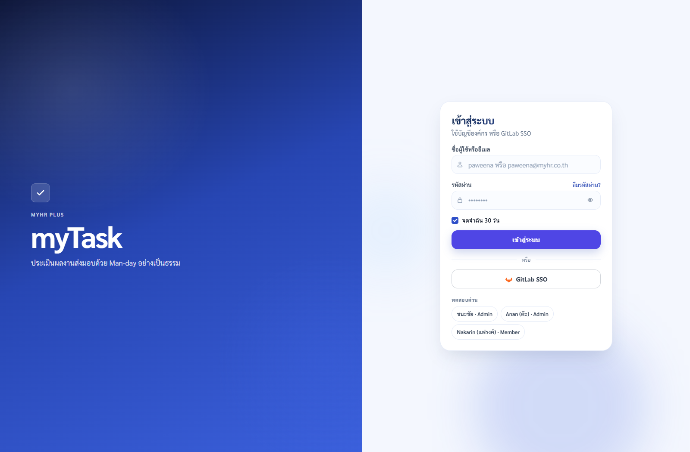
ภาพที่ 1: หน้าจอเข้าสู่ระบบผ่าน GitLab SSO และปุ่มสลับบัญชีด่วนทั้ง 15 คนพร้อมระบุสิทธิ์ชัดเจน
🎯 วัตถุประสงค์และการใช้งาน
- ใช้สำหรับยืนยันตัวตนเข้าสู่ระบบผ่าน GitLab OAuth SSO ในสภาพแวดล้อมใช้งานจริง
- มี Quick Persona Switcher สำหรับทดสอบสิทธิ์ของทั้ง 15 คนในระบบ (Admin, Lead, Member) ได้ในคลิกเดียวโดยไม่ต้องพิมพ์รหัสผ่าน
- แสดงระดับตำแหน่ง (Senior, Mid, Junior, FirstMonth) และสายงาน (Implement / R&D) ของทุกคนอย่างชัดเจน
💡 สิทธิ์ที่ได้รับตามบทบาท
- Admin (ผู้จัดการ): จัดการระบบได้ทุกเมนู, ปรับเกณฑ์คะแนน, จับ Snapshot, และ Writeback ข้อมูล
- Lead (หัวหน้างาน): อนุมัติงาน, ย้ายการ์ดเข้า Done, แก้วันบน Gantt, และประเมิน 1-on-1
- Member (พนักงานทั่วไป): เข้าถึง
/me, ย้ายงานได้ถึง Ready for QA, บันทึกผลงานและลิงก์ MR
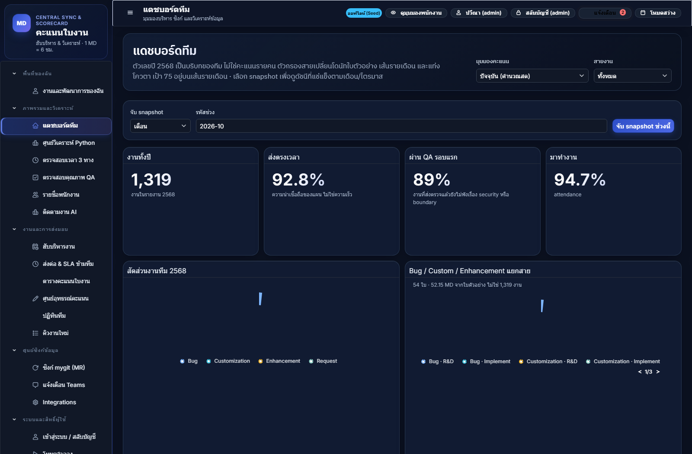
ภาพที่ 2: แดชบอร์ดภาพรวมทีม แสดงการ์ด KPI สรุปผล, กราฟโดนัทสัดส่วนภาระงาน, เส้นแนวโน้ม และโควตาคงเหลือ
🎯 องค์ประกอบสำคัญบนแดชบอร์ด
- KPI Summary Cards: แสดงดัชนีรวมของทีม, ความแม่นยำในการส่งมอบ (On-time Delivery %), คะแนนตามเกณฑ์ DoD, และสัดส่วนงานแทรก (Unplanned %)
- สัดส่วนภาระงาน 2568: กราฟโดนัทจำแนกประเภทงานจริงเปรียบเทียบระหว่าง Feature, Customization, และ Maintenance
- Bug / Custom / Enhancement แยกสาย: กราฟเปรียบเทียบภาระงานระหว่างสาย Implement และสาย R&D
📈 กราฟแนวโน้มและการวิเคราะห์โควตา
- เส้นรายเดือน (Monthly Trends): แสดงความแม่นยำ, การส่งตามแผน, และอัตรา Rework ย้อนหลัง เทียบกับเส้นเป้าหมาย 75%
- โควตาที่ใช้กับที่ว่าง: กราฟแท่งแสดงภาระงานปัจจุบัน (Used MD) เทียบกับโควตาว่าง (Free MD) ของพนักงานแต่ละคน
- ช่วยให้ Lead และ Admin สามารถเกลี่ยงาน (Workload Balancing) ได้อย่างเป็นธรรม
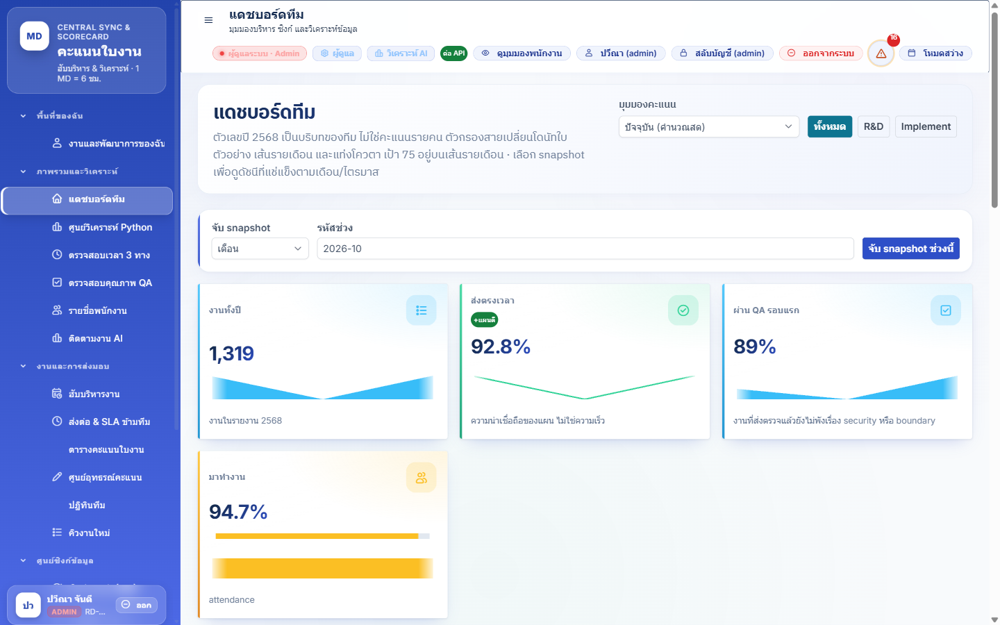
ภาพที่ 3: แดชบอร์ดทีมในโหมดสว่าง พร้อมตัวเลือก Snapshot ย้อนหลังรายเดือน (2025-08 ถึง 2025-11) และรายไตรมาส
🎯 ระบบบันทึกประวัติ (Frozen Snapshot)
- ระบบสามารถจับประวัติคะแนนจริงประจำเดือน (เช่น สิ้นเดือนวันที่ 1 เวลา 02:00 น. ผ่าน Cron Job อัตโนมัติ) หรือกดจับประวัติด้วยมือ
- เมื่อเลือกช่วงเวลา เช่น
เดือน 2025-10 · 15 คน ตัวเลขคะแนน ดัชนี และอันดับจะถูกตรึงไว้ตามสภาพจริงของเดือนนั้นอย่างแม่นยำ ไม่ได้รับผลกระทบจากการซิงก์งานใหม่
- Deduplication Warning: หากเลือกช่วงเวลาที่เคยบันทึกไว้แล้ว ระบบจะแสดงป้ายเตือนสีส้มเพื่อป้องกันการกดบันทึกทับโดยไม่ตั้งใจ
💡 ขั้นตอนการจับ Snapshot ด้วยตนเอง
- เลือกประเภทช่วงเวลา (เดือน หรือ ไตรมาส)
- ระบุรหัสรอบเวลา เช่น
2025-11 หรือ 2025-Q3
- กดปุ่ม "บันทึกประวัติ Snapshot" ระบบจะประมวลผลคะแนนของทุกคนทั้ง 15 คนและเก็บลงฐานข้อมูล
- ระบบจะบันทึก Audit Log ระบุว่าใครเป็นผู้จับภาพไว้เป็นหลักฐาน
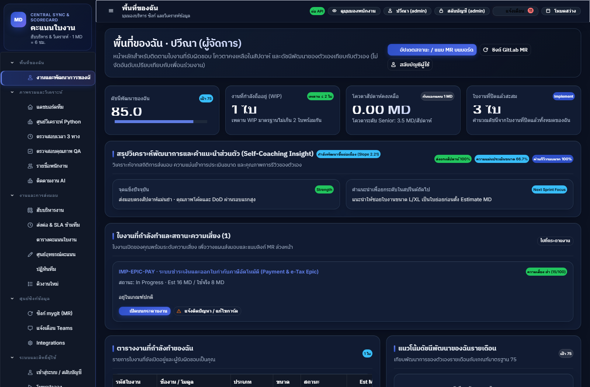
ภาพที่ 4: หน้าจอ My Workspace พอร์ทัลส่วนตัวสำหรับพนักงานติดตามงานตนเอง ดัชนีพัฒนาการ และเช็คลิสต์ก่อนส่งมอบ
🎯 ส่วนแสดงผลสำหรับผู้ปฏิบัติงาน
- ดัชนีพัฒนาการส่วนบุคคล (Self Index): แถบความคืบหน้าแสดงคะแนนดัชนีของตนเองเทียบกับเป้าหมาย 75%
- เส้นพัฒนาการย้อนหลัง: กราฟเส้นแสดงผลงานรายเดือนของตนเอง เพื่อให้เห็นทิศทางการเติบโต
- รายการงานที่กำลังทำ (Active Tasks): ตารางแสดงงานที่ตนเองกำลังรับผิดชอบ วันกำหนดส่ง และสถานะคัมบัง
💡 เครื่องมือส่งเสริมการทำงาน (Self-Coaching)
- เช็คลิสต์ก่อนขอรีวิวโค้ด: ตรวจสอบว่ามี Unit Test ครบถ้วน, แนบลิงก์ MR แล้ว, และทดสอบบน Staging เรียบร้อย
- ปุ่มลัดนำทางด่วน: กดเปิดกระดานคัมบัง, ตรวจสอบการซิงก์ GitLab MR, หรือสลับโปรไฟล์ได้ทันที
- ช่วยให้พนักงานสามารถกำกับดูแลตนเอง (Self-Driven) ได้โดยไม่ต้องรอหัวหน้างานสั่ง
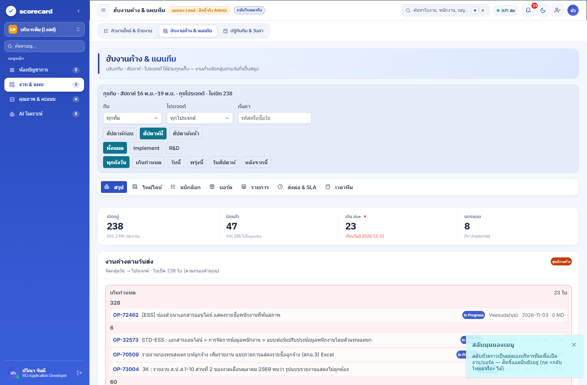
ภาพที่ 5: สรุปภาพรวมสถานะงานในฮับบริหารงาน แสดงสัดส่วนสถานะงาน สัดส่วนสาย และภาระงาน WIP ต่อคน
🎯 รายละเอียดกราฟสถิติงาน
- สัดส่วนสถานะงาน (Status Distribution): กราฟโดนัทแสดงปริมาณงานใน Backlog, In Progress, Code Review, In QA, และ Done
- สัดส่วนสายงาน (Track Distribution): แสดงสัดส่วนปริมาณงานที่กำลังดำเนินอยู่ระหว่างทีม Implement และ R&D
- WIP ต่อคน (Work In Progress per Person): กราฟแท่งจำแนกชั่วโมง Man-day ที่กำลังทำอยู่ของแต่ละคน ป้องกันการเกิดคอขวด
💡 ประโยชน์ในการบริหารโครงการ
- ช่วยให้ผู้จัดการมองเห็นภาพรวมของโครงการในหน้าเดียว (Single Pane of Glass)
- ตรวจพบความผิดปกติ เช่น งานคั่งค้างในขั้นตอน Code Review หรือ In QA เกินเกณฑ์มาตรฐาน
- สามารถนำข้อมูลไปใช้ประกอบการประชุม Daily Standup หรือ Sprint Retrospective ได้ทันที
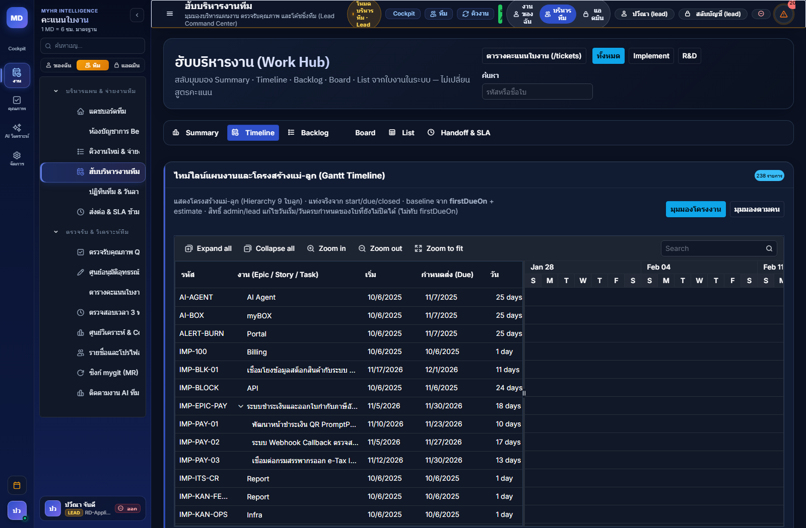
ภาพที่ 6: Gantt Chart แสดงโครงสร้างงานแบบลำดับชั้น (Epic > Task), วันเริ่ม-สิ้นสุด, แถบความคืบหน้า และแถบเครื่องมือซูม
🎯 โครงสร้างงานลำดับชั้น (Gantt Tree Hierarchy)
- Parent-Child Structure: รองรับการจัดกลุ่มงานระดับ Epic/Feature แม่ลูก เช่น
IMP-EPIC-PAY แตกแขนงออกเป็น 4 งานย่อย
- Gantt Toolbar: มีปุ่ม ExpandAll, CollapseAll, ZoomIn, ZoomOut, ZoomToFit, และช่องค้นหาชื่องาน
- แสดงชื่อผู้รับผิดชอบ, วันที่เริ่มงานจริง, วันส่งมอบ, และเปอร์เซ็นต์ความคืบหน้าบนแท่งกราฟ
💡 กฎการปรับเปลี่ยนวันที่ (Date Safety Rules)
- เฉพาะผู้ใช้ระดับ Admin และ Lead เท่านั้นที่มีสิทธิ์ลากขยายหรือแก้วันที่บน Gantt Timeline
- Lock First Due: การแก้วันส่งมอบ (DueDate) จะไม่ไปทับวันส่งมอบครั้งแรก (FirstDueOn) ทำให้สูตรวัด On-time ยังคงเที่ยงตรง
- รองรับการส่งคำขอ Sync กลับไปยัง OpenProject (Writeback) เมื่อเปิดใช้งาน
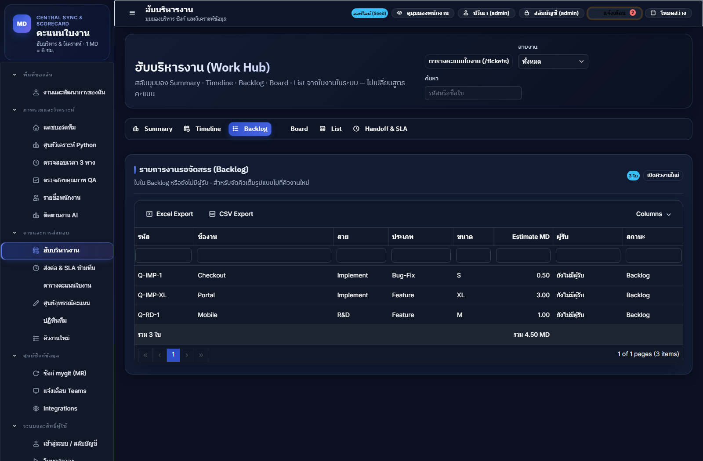
ภาพที่ 7: หน้ารายการงานในคลัง Backlog พร้อมการจำแนกขนาดไซส์ (XS, S, M, L, XL), Story Points และปุ่มรับงาน
🎯 การบริหารคลังงาน (Backlog Refinement)
- รวบรวมงานทั้งหมดที่ยังไม่ได้เริ่มทำ หรืออยู่ระหว่างรอประเมินขนาดและมอบหมายผู้รับผิดชอบ
- ตารางเทียบขนาดมาตรฐาน:
• XS: 0.5 - 1.0 MD (งานแก้จุดเล็ก / Hotfix)
• S: 1.5 - 2.5 MD (งานย่อย / Bug ทั่วไป)
• M: 3.0 - 5.0 MD (ฟังก์ชันระดับกลาง)
• L: 6.0 - 9.0 MD (ฟีเจอร์ใหญ่)
• XL: 10+ MD (Epic ต้องแตกงานย่อย)
💡 การดึงงานเข้าแผน (Sprint Planning)
- สามารถกรองดูตามสายงาน Implement หรือ R&D
- ตรวจสอบว่าใบงานมีเกณฑ์การรับมอบ (Acceptance Criteria) และกำหนดคะแนน Story Points เรียบร้อยหรือไม่
- เมื่อมอบหมายคนรับผิดชอบและระบุวันเริ่มงาน การ์ดจะย้ายเข้าสู่กระดานคัมบังโดยอัตโนมัติ
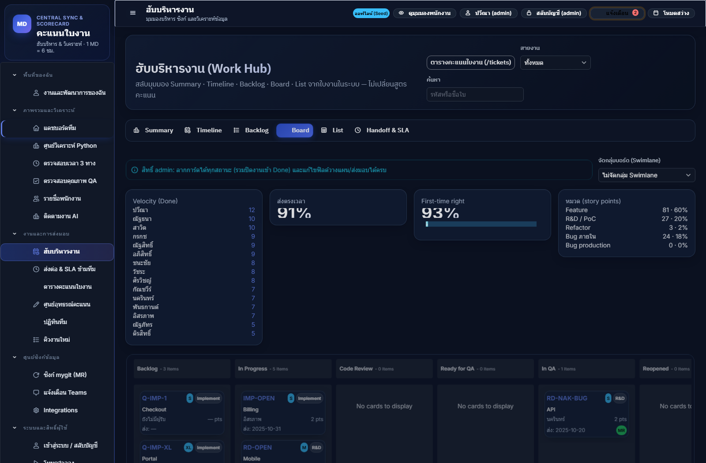
ภาพที่ 8: กระดานคัมบัง 7 คอลัมน์สถานะ รองรับ Drag-and-Drop, แสดงการ์ดแยกตาม Swimlane และระบุ Story Points ชัดเจน
🎯 วงจรสถานะงาน 7 ขั้นตอน (Workflow Columns)
- 1. Backlog: งานในคิวที่รอวางแผน
- 2. In Progress: กำลังพัฒนาโค้ด (บันทึกวันเริ่มอัตโนมัติ)
- 3. Code Review: พัฒนาเสร็จ รอรีวิวโค้ด (ต้องมีลิงก์ MR)
- 4. Ready for QA: ผ่านการรีวิว พร้อมนำขึ้นระบบทดสอบ
- 5. In QA: อยู่ระหว่างทดสอบระบบโดยทีม QA
- 6. Reopened: พบปัญหา ต้องแก้ไขซ้ำ (นับคะแนน Reopen)
- 7. Done: ตรวจรับเรียบร้อย ปิดงานสมบูรณ์
💡 การสลับ Swimlane และสิทธิ์การย้ายการ์ด
- Swimlane Switcher: สามารถสลับการจัดกลุ่มตามผู้รับผิดชอบ (Assignee) หรือแยกตามสายงาน (Track) ได้ตามต้องการ
- กฎความปลอดภัยของสิทธิ์:
• Member: ลากการ์ดได้ถึงสถานะ Ready for QA / In QA (ห้ามปิดงานเข้า Done เอง)
• Lead / Admin: ลากการ์ดได้ทุกสถานะ รวมถึงการตรวจรับและปิดงานเข้า Done
🎯 ฟังก์ชันในหน้าต่างแก้ไขการ์ด (Dialog Fields)
เมื่อคลิกที่การ์ดใดๆ บนกระดานคัมบัง หน้าต่าง Syncfusion Dialog จะเปิดขึ้นมาพร้อมข้อมูลครบวงจร:
- ฟิลด์ทางเทคนิค: ระบุหมวดหมู่ความเชี่ยวชาญ (FE, BE, Full-Stack, AI-Data, Infra) และประเภทงาน (Feature, R&D-PoC, Refactor, Bug)
- ฟิลด์ส่งมอบ: ใส่ลิงก์ GitLab Merge Request (MR Link), ผลการทดสอบ PoC (Adopted, Alternative Chosen, Dropped), และสาเหตุข้อผิดพลาดของ Bug (Logic, UI, API, Requirement, Environment)
- ประวัติและการส่งมอบ (Delivery & Activity Log): กล่องสรุปประวัติแสดงวันเริ่มงานจริง, วันกำหนดส่งครั้งแรก, จำนวนรอบรีวิว, และประวัติการ Reopen ในอดีต
คำแนะนำ: การบันทึกสาเหตุข้อผิดพลาด (Bug Cause) และผลการวิจัย (PoC Result) อย่างสม่ำเสมอ จะช่วยให้ระบบ Python Analytics Intelligence Hub สามารถตรวจจับความเสี่ยงและออกรายงานวิเคราะห์สาเหตุเชิงลึก (Root Cause Analysis) ให้กับทีมได้อย่างถูกต้องแม่นยำ
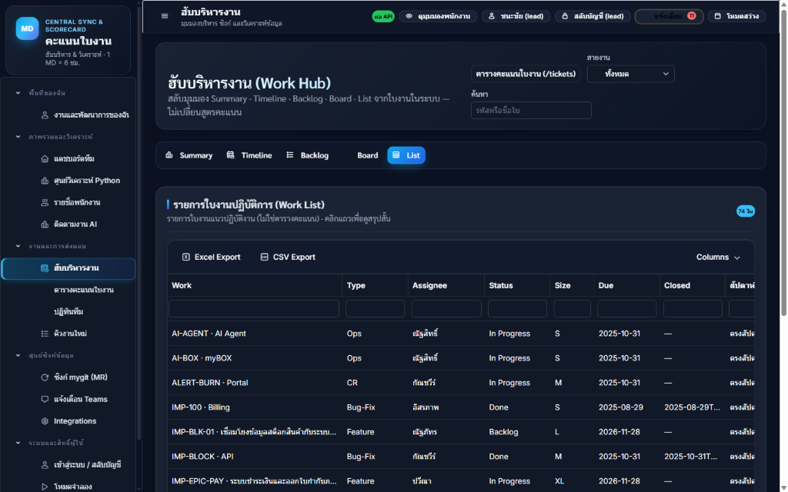
ภาพที่ 9: ตารางรายการงานทั้งหมด รองรับการจัดเรียง, กรองข้อมูลแบบหลายมิติ, เลือกคอลัมน์ และส่งออกไฟล์
🎯 คุณสมบัติเด่นของตาราง Syncfusion Grid
- Filtering & Searching: ค้นหาข้อความด่วน หรือเปิดใช้งานตัวกรองแบบ Excel Filter ในแต่ละคอลัมน์
- Column Chooser: เลือกซ่อนหรือแสดงคอลัมน์ที่ต้องการดูได้ตามความต้องการส่วนบุคคล
- Excel & CSV Export: ส่งออกข้อมูลงานทั้งหมดออกเป็นไฟล์ Excel หรือ CSV ได้ในคลิกเดียว
- Grid State Persistence: จดจำการเรียงลำดับและการตั้งค่าคอลัมน์ไว้ในเบราว์เซอร์
💡 ประโยชน์สำหรับผู้จัดการโครงการ
- เป็นมุมมองตารางที่แสดงรายละเอียดเชิงลึกของใบงานทั้งหมด ไม่จำกัดเพียงแค่งานที่กำลังทำ
- มีแถวสรุปผลรวม (Aggregates) ที่ด้านล่างของตาราง แสดงผลรวม Man-day, จำนวนใบงาน, และค่าเฉลี่ย
- เหมาะสำหรับการจัดทำรายงานประจำสัปดาห์ส่งฝ่ายบริหาร
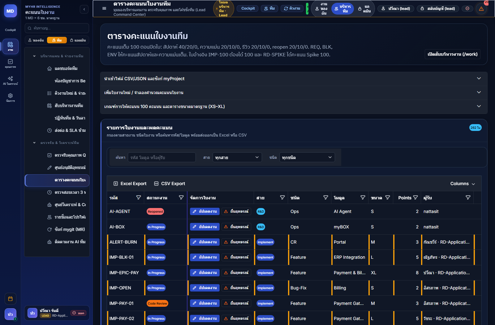
ภาพที่ 10: ตารางคำนวณคะแนนใบงาน 29 คอลัมน์ ตรึง 2 คอลัมน์แรก (Frozen Columns) พร้อม Accordion ฟอร์มนำเข้าไฟล์
🎯 คอลัมน์ตรึงและระบบคะแนนใบงาน
- Frozen Columns (2 คอลัมน์แรก): ตรึงรหัสใบงานและสายงานไว้ทางซ้ายตลอดเวลา เลื่อนตารางแนวนอนได้อย่างราบรื่นโดยไม่หลุดตำแหน่ง
- สูตรคะแนนใบงาน (100 คะแนนเต็ม): คำนวณจากความตรงเวลา (On-time 30%), ความแม่นยำ MD (Accuracy 30%), คุณภาพการรีวิว (Review 20%), และอัตรา Reopen (20%)
- แสดงสถานะงานแทรก (Unplanned) และงานวิจัย (Spike) อย่างชัดเจน
💡 Accordion ฟอร์มจัดการใบงาน
- ส่วนที่ 1: นำเข้าไฟล์: รองรับการอัปโหลดไฟล์คะแนนแบบ CSV หรือ JSON เข้าระบบ
- ส่วนที่ 2: เพิ่มใบงานด้วยตนเอง: ฟอร์มสร้างใบงานใหม่สำหรับงานที่ไม่ได้ผ่าน OpenProject
- ส่วนที่ 3: เกณฑ์การให้คะแนน: สรุปสูตรและกติกาการคำนวณคะแนนเพื่อความโปร่งใส
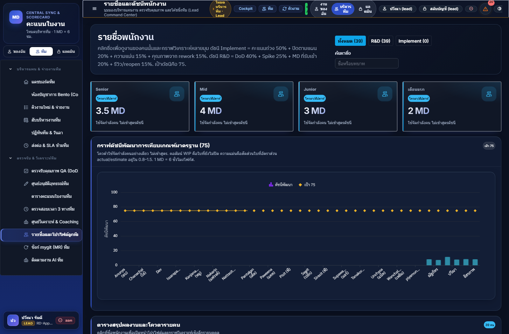
ภาพที่ 11: กระดานคะแนนพนักงานทั้ง 15 คน แสดงดัชนีพัฒนาการ คะแนน DoD แถบแนวโน้ม และกราฟแท่งเปรียบเทียบ
🎯 ดัชนีพัฒนาการรายบุคคล (Person Index)
- รวบรวมรายชื่อพนักงานทั้ง 15 คน พร้อมจัดอันดับผลงานเปรียบเทียบกับเส้นเป้าหมาย 75%
- คอลัมน์สำคัญ: แผนงาน (Plan %), สัดส่วนงานปิดตามแผน (Weighted Score), การผ่านเกณฑ์เสร็จสมบูรณ์ (DoD Passed %), อัตรา Rework, และดัชนีคะแนนรวม (Index)
- มีปุ่มกดที่ชื่อพนักงานเพื่อเปิดเข้าสู่แดชบอร์ดรายคนเชิงลึกได้ทันที
💡 กราฟเปรียบเทียบภาพรวมท้ายหน้า
- มี Syncfusion Chart ด้านล่างตาราง แสดงคะแนนดัชนีของพนักงานทุกคนเรียงตามลำดับ
- ช่วยให้มองเห็นการกระจายตัวของผลงานในทีม (Performance Distribution) ได้อย่างชัดเจน
- สามารถส่งออกข้อมูลตารางพนักงานเป็น Excel เพื่อนำไปคำนวณโบนัสหรือผลตอบแทนได้
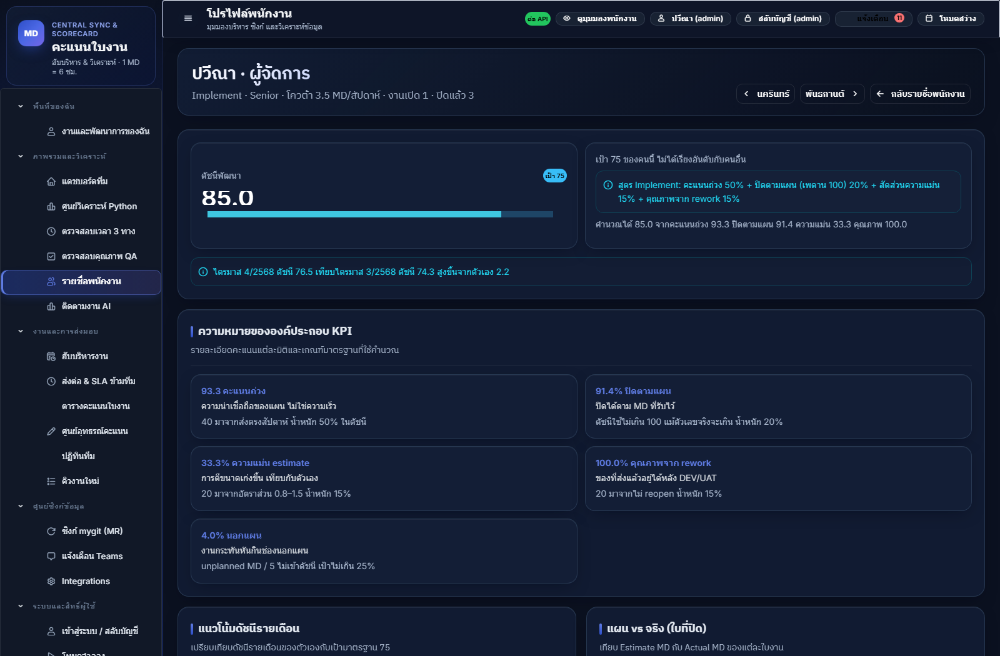
ภาพที่ 12: แดชบอร์ดรายบุคคลพร้อมปุ่มนำทางก่อนหน้า/ถัดไป แสดงกราฟแนวโน้มส่วนตัว สัดส่วนงาน และคุณภาพส่งมอบ
🎯 ปุ่มนำทางต่อเนื่อง (1-on-1 Continuous Nav)
- ปุ่ม < คนก่อนหน้า และ คนถัดไป >: ช่วยให้ผู้จัดการหรือ Lead สามารถตรวจผลงานพนักงานทีละคนได้อย่างต่อเนื่องครบทั้ง 15 คนในคลิกเดียว
- แสดงการ์ดสรุป KPI ส่วนตัว: ดัชนีพัฒนาการ, คะแนนแผน, สัดส่วนงานปิด, คะแนน DoD, และโควตารายสัปดาห์
- แสดงกราฟ Self-Trend ติดตามผลงานรายเดือนของตนเอง
💡 กราฟจำแนกมิติคุณภาพงาน
- กราฟสัดส่วนงานเลื่อน (Slip Share): แสดงเปอร์เซ็นต์งานที่ส่งตรงเวลาเทียบกับงานที่หลุดสัปดาห์
- กราฟสัดส่วนประเภทงาน: วิเคราะห์ว่าทำงาน Feature, Bug, หรือ Spike เป็นสัดส่วนเท่าใด
- คุณภาพส่งมอบ: วิเคราะห์จำนวนรอบ Code Review และอัตราการเกิด Reopen
- มีตารางประวัติใบงานทั้งหมดของพนักงานคนนี้ที่ด้านล่าง
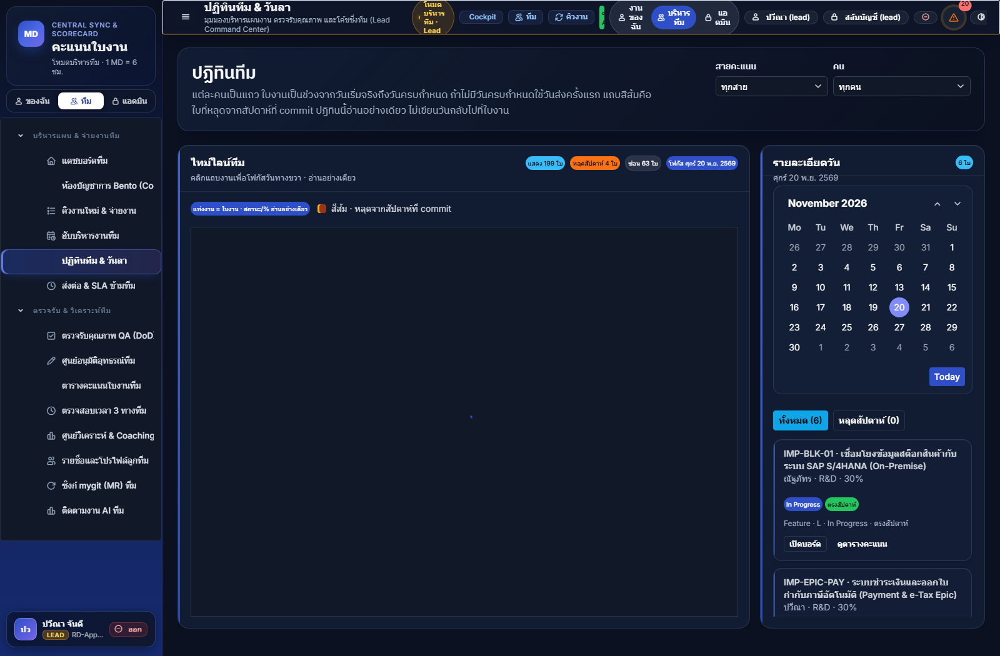
ภาพที่ 13: ปฏิทินไทม์ไลน์รายเดือน จัดกลุ่มแถวตามรายชื่อพนักงาน พร้อมไฮไลต์แถบสีส้มสำหรับงานที่เลื่อนหลุดกำหนด
🎯 มุมมองไทม์ไลน์ทรัพยากร (Resource TimelineMonth)
- แสดงพนักงานทั้ง 15 คนในแถวแนวตั้ง และแกนวันที่ตามปฏิทินในแนวนอน
- แถบสีน้ำเงินแสดงงานที่กำลังดำเนินการตามแผนปกติ
- แถบสีส้ม/แดง (Slipped Ticket): แสดงงานที่หลุดกำหนดส่งครั้งแรก (Week Offset > 0) เพื่อให้ทีมเห็นจุดวิกฤติตั้งแต่เนิ่นๆ
- เอาเมาส์ชี้เพื่อดู Tooltip สรุปรายละเอียด: ชื่องาน, ไซส์ MD, สถานะ และระยะเวลาที่เลื่อน
💡 การประยุกต์ใช้งานในการวางแผน
- ใช้ในการประชุม Sprint Review และ Release Planning เพื่อดูความพร้อมในการส่งมอบซอฟต์แวร์
- ตรวจดูว่ามีพนักงานคนใดว่างในสัปดาห์หน้า เพื่อจ่ายงานใหม่จาก Backlog ได้อย่างมีประสิทธิภาพ
- สามารถกรองดูเฉพาะสาย Implement หรือเฉพาะสาย R&D ได้ที่ตัวกรองมุมบนขวา
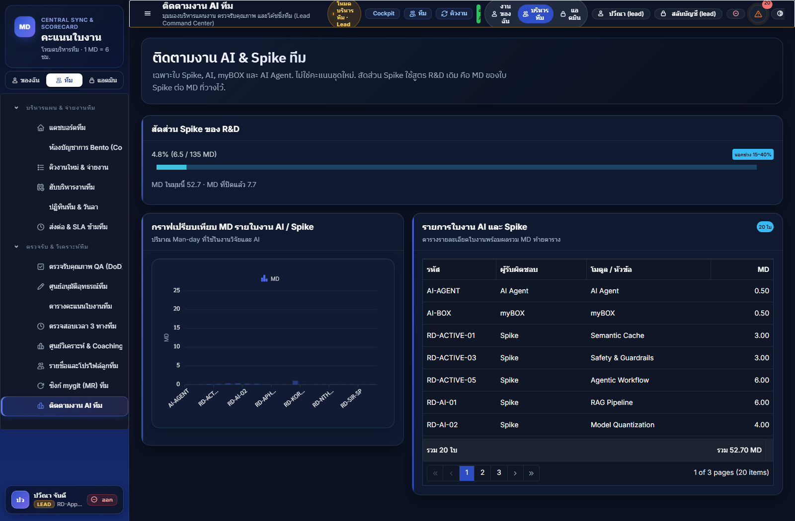
ภาพที่ 14: หน้าจอติดตามสัดส่วนงานวิจัย AI, Spike Ratio Progress Bar และกราฟเปรียบเทียบภาระงานรายใบ
🎯 การควบคุมสัดส่วนงานวิจัย (Spike Band Governance)
- ในสายงาน R&D กำหนดให้มีงานประเภท Spike เพื่อศึกษาเทคโนโลยีใหม่ได้ แต่ต้องไม่เกินเพดานที่กำหนด (เช่น ไม่เกิน 30-40% ของ Man-day ทั้งหมด)
- แถบความคืบหน้า Research Spike Share แสดงเปอร์เซ็นต์งาน Spike เทียบกับงานพัฒนา Feature ปกติ
- แสดงป้ายสถานะกำกับ เช่น
สัดส่วนงานวิจัยปกติ หรือ เกินเกณฑ์ เพื่อรักษาสมดุลผลผลิต
💡 กราฟเปรียบเทียบ Man-day รายงาน AI
- กราฟแท่ง Syncfusion Chart แสดงการใช้เวลา Man-day จริงในแต่ละใบงาน AI
- มีตารางสรุปรายการงาน AI ทั้งหมด พร้อมผลลัพธ์การทดลอง (PoC Adopted / Dropped)
- ช่วยให้องค์กรประเมินความคุ้มค่า (ROI) ของการลงทุนวิจัยด้าน Generative AI และ Machine Learning
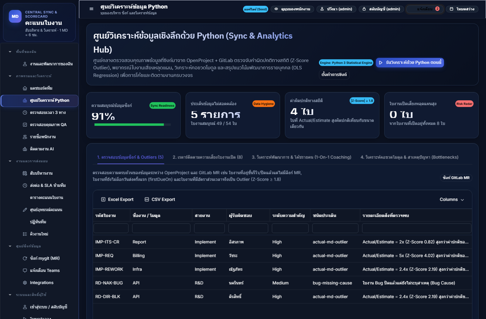
ภาพที่ 15: ศูนย์วิเคราะห์อัจฉริยะ ขับเคลื่อนด้วย Python Analytics Engine แสดงความสมบูรณ์การซิงก์ และคำแนะนำโค้ชชิ่ง
🎯 เครื่องมือวิเคราะห์ 5 เสาหลัก (5 Intelligence Pillars)
- 1. Sync Hygiene Readiness (%): ตรวจสอบความถูกต้องของข้อมูลใบงาน วันที่ครบกำหนด และการลงบันทึกเวลา
- 2. Z-Score Outlier Radar: ตรวจหาพนักงานหรือใบงานที่มีค่าผิดปกติเชิงสถิติ (งานกินเวลาเกิน 2 SD)
- 3. Delivery Risk Radar: แจ้งเตือนใบงานที่มีความเสี่ยงสูงว่าจะส่งมอบไม่ทัน
- 4. 1-on-1 Coaching Insights: สรุปประเด็นคำแนะนำสำหรับหัวหน้างานใช้พูดคุยพัฒนารายคน
- 5. Module & Variance Bottlenecks: วิเคราะห์โมดูลที่มีปัญหาเกิด Bug ซ้ำซาก
💡 ขับเคลื่อนด้วย Python 3 Data Engine
- ประมวลผลผ่านสคริปต์
scripts/analytics_engine.py ฝั่งเซิร์ฟเวอร์ ให้ผลลัพธ์ทางสถิติที่แม่นยำ
- มีปุ่ม "รันวิเคราะห์ AI ทันที" สำหรับผู้ใช้ระดับ Admin และ Lead เพื่อคำนวณข้อมูลใหม่สดตามสถานการณ์ล่าสุด
- สามารถส่งออกรายงานผลการวิเคราะห์ออกเป็นไฟล์เพื่อใช้ในที่ประชุมผู้บริหาร
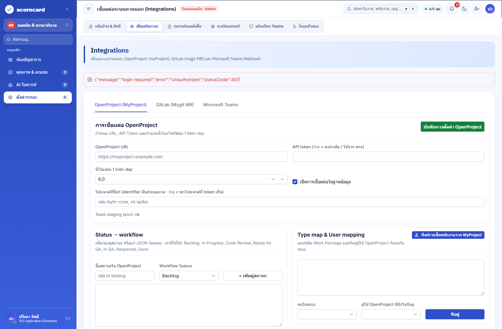
ภาพที่ 16: หน้าจอตั้งค่าการเชื่อมต่อ 3 ระบบหลัก (OpenProject, GitLab, Microsoft Teams) พร้อมประวัติการซิงก์ข้อมูล
🎯 การเชื่อมต่อทั้ง 3 ระบบ
- 1. OpenProject: ซิงก์ Work Packages, ชั่วโมงทำงาน (Time Entries), วันครบกำหนด, และเขียนสถานะ/ผู้รับผิดชอบกลับ (Writeback)
- 2. GitLab API v4: ดึงข้อมูล Merge Requests อัตโนมัติ, จับคู่รหัสใบงานจากชื่อ Branch และ Commit, ตรวจสอบสถานะการอนุมัติ
- 3. Microsoft Teams Webhook: ยิงการแจ้งเตือนใบงานที่หลุดกำหนดหรือเสี่ยงวิกฤติเข้าช่องสนทนาของทีมโดยตรง
💡 ตารางประวัติการซิงก์ (Sync Runs History)
- แสดงรอบการซิงก์ย้อนหลัง พร้อมสถานะ (Success / Failed), จำนวนใบงานที่เพิ่มใหม่, จำนวนใบงานที่อัปเดต, และระยะเวลาที่ใช้
- มีปุ่ม "ซิงก์เดี๋ยวนี้ (Sync Now)" สำหรับสั่งดึงข้อมูลล่าสุดจาก OpenProject ทันทีโดยไม่ต้องรอรอบ Cron
- มีระบบจับคู่ผู้ใช้ OpenProject กับพนักงานใน Scorecard (User Mapping)
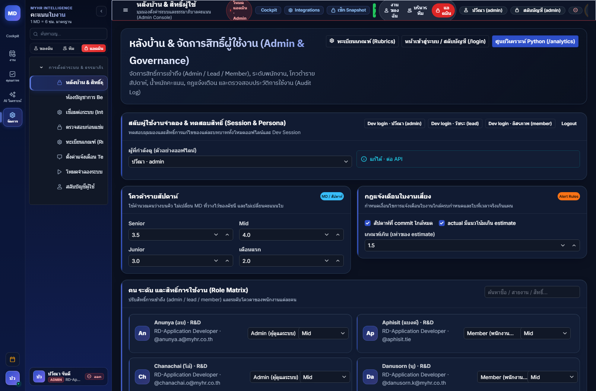
ภาพที่ 17: หน้าจอศูนย์กลางผู้ดูแลระบบ ปรับสิทธิ์พนักงาน โควตารายสัปดาห์ น้ำหนักคะแนน และตารางประวัติ Audit Log
🎯 การกำหนดค่าหลักของระบบ
- Access Role Matrix: กำหนดสิทธิ์รายคนระหว่าง
admin, lead, และ member
- Level Overrides: ปรับระดับตำแหน่งรายบุคคล (Senior, Mid, Junior, FirstMonth)
- Weekly Quotas: กำหนดโควตาชั่วโมงทำงานมาตรฐานต่อสัปดาห์ของแต่ละระดับตำแหน่ง
- Track Weights: ปรับน้ำหนักสูตรคะแนนระหว่างผลงานตามแผน, คุณภาพ DoD, และสัดส่วนงานแทรก
💡 บันทึกประวัติการเปลี่ยนแปลง (Audit Log)
- บันทึกทุกการกระทำสำคัญในระบบ: ใครเป็นคนแก้, แก้ไขเรื่องอะไร, ค่าเดิมคืออะไร, และค่าใหม่คืออะไร
- บันทึกการปรับสิทธิ์, การจับ Snapshot, การรัน Analytics, และการซิงก์ข้อมูล
- เป็นไปตามมาตรฐานความปลอดภัยและการตรวจสอบย้อนกลับ (Traceability & Compliance)
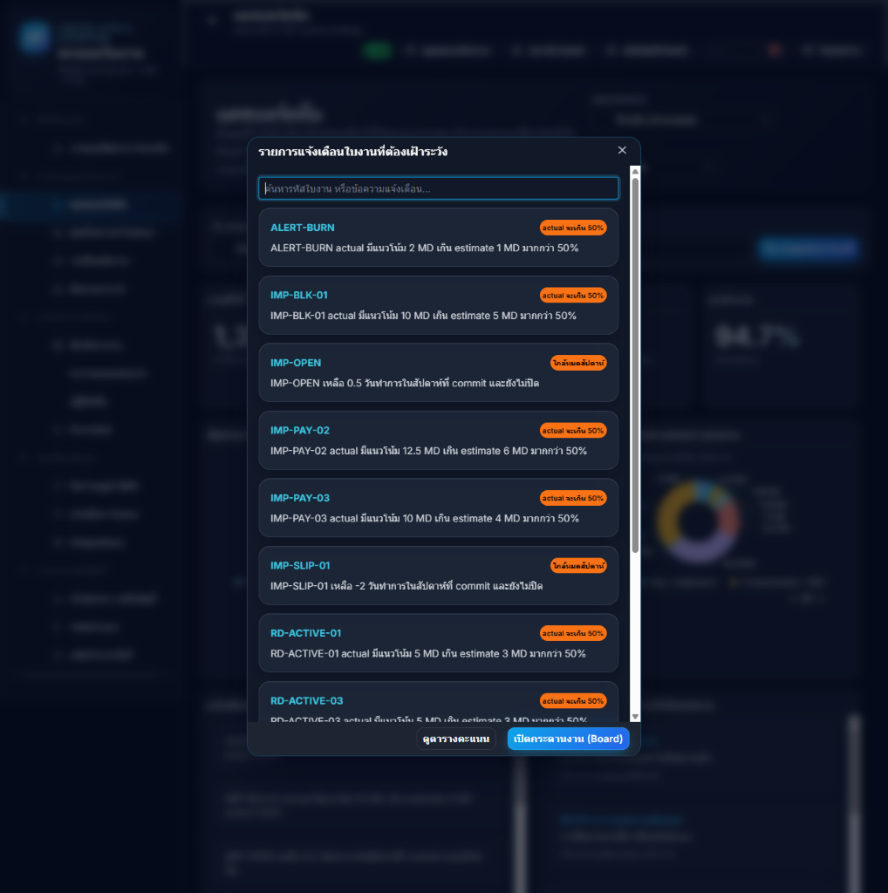
ภาพที่ 18: หน้าต่างแจ้งเตือนใบงานที่ต้องเฝ้าระวัง พร้อมช่องค้นหา Real-time Text Filter กรองตามรหัสใบงานได้ทันที
🎯 ฟังก์ชันบนแถบเครื่องมือหลัก (AppBar)
- ปุ่มพับเมนู Mini-Sidebar: กดปุ่ม Hamburger บน Desktop เพื่อพับเมนูเหลือ 68px แสดงเฉพาะไอคอน ช่วยเพิ่มพื้นที่ทำงานให้กับ Gantt และตาราง Grid อีก 192px
- ชิปสถานะระบบ: แสดงสถานะว่ากำลัง
ต่อ API จริง, ออฟไลน์ (Seed), หรืออยู่ใน โหมดจำลอง
- ปุ่มสลับมุมมองพนักงาน: ช่วยให้ Admin และ Lead สามารถกดจำลองมุมมองแบบ Member เพื่อตรวจดูความถูกต้องของ UI ได้
💡 หน้าต่างแจ้งเตือนค้นหาได้ (#alertDialog)
- ปุ่มแจ้งเตือนพร้อม Badge สีแดงกะพริบระบุจำนวนใบงานที่มีความเสี่ยง
- เมื่อคลิกจะเปิด Syncfusion Dialog แสดงรายการงานที่หลุดกำหนดส่ง หรือทำงานเกินเวลาที่ประมาณการไว้
- ช่องค้นหา Real-time: มีช่อง
ejs-textbox พิมพ์รหัสใบงานหรือชื่อโมดูลเพื่อกรองรายการแจ้งเตือนได้ทันทีโดยไม่ต้องเลื่อนหา
ภาพที่ 19: แดชบอร์ดทีมในโหมดสว่าง (Light Theme) สลับได้ทันทีแบบ Zero-Reload พร้อมความคมชัดระดับ WCAG 2.2
🎯 สถาปัตยกรรม Dual Theme ของระบบ
- ปุ่มสลับธีมบน AppBar (#appbar-theme-toggle): แสดงไอคอนดวงอาทิตย์/พระจันทร์ พร้อมข้อความ
โหมดสว่าง / โหมดมืด
- Zero-Reload Switching: สลับชุดสไตล์สเปกตรัมระหว่าง
tailwind3.css และ tailwind3-dark.css ทันทีโดยไม่ต้องโหลดหน้าเว็บใหม่
- Dynamic Chart Theming: กราฟและแถบความคืบหน้าทั้ง 30 จุด ผูกสัญญาณสลับธีมแสดงผลคมชัดอัตโนมัติ
💡 ความคมชัดและการจดจำค่า
- Frozen Columns Opaque Background: คอลัมน์ที่ถูกตรึงจะมีพื้นหลังทึบเสมอ (สีขาวใน Light Mode, สีกรมท่าเข้มใน Dark Mode) ป้องกันตัวอักษรของคอลัมน์ที่เลื่อนมาทับซ้อนกัน
- Zero FOUC (Flash of Unstyled Content): ฝัง inline script ใน
index.html เพื่ออ่านค่าจาก localStorage และเซ็ตธีมตั้งแต่เฟรมแรกที่เปิดเว็บ
🎯 ฟังก์ชันการตรวจจับคอขวดข้ามทีม
- กราฟ Stage Aging by Track (StackingBar): แสดงชั่วโมงเฉลี่ยที่การ์ดค้างในแต่ละสถานะ (In Progress, Code Review, In QA, Blocked) แยกตามทีม FE, BE, QA, Implement, และ Infra
- Cross-Team Blocker Matrix: บอร์ดแสดงทีมที่กำลังรออีกทีมปลดล็อกงาน เช่น FE รอ API จาก BE หรือ Dev รอแก้ปัญหา Environment จาก Infra
- ปุ่ม Ping Teams: ยิงแจ้งเตือนผ่าน Microsoft Teams Webhook ถึงผู้รับช่วงหรือทีมที่กำลังบล็อกงานได้ในคลิกเดียว
💡 Fair Cutoff Rule (กติกาการวัดผลที่เป็นธรรม)
- On-Time Delivery ของ Dev: วัดจากเวลาที่การ์ดย้ายเข้าสู่สถานะ
Ready for QA ครั้งแรกเทียบกับ first_due_on
- QA Waiting Buffer: เวลาที่ใบงานค้างรอคิวการทดสอบในถัง QA จะไม่ถูกนำมาหักคะแนนความล่าช้าของนักพัฒนา
- ตารางตรึง 2 คอลัมน์แรก (Frozen Columns): ตรึงรหัสใบงานและสถานะค้าง สะดวกในการเลื่อนตรวจสอบเวลาที่ใช้จริงเทียบกับเกณฑ์ SLA
🎯 ตัวชี้วัดคุณภาพ 4 มิติ (QA KPIs)
- First-Time Right %: สัดส่วนใบงานที่ผ่านการทดสอบรอบแรกโดยไม่ถูกตีกลับ (เป้าหมาย ≥ 85%)
- Reopen Rate (QA ตีกลับ): อัตราการส่งงานกลับไปแก้ไข เพื่อชี้เป้าโมดูลที่โค้ดยังขาดความเสถียร
- Bug Escape (หลุด Prod): อัตราบั๊กที่หลุดรอดจากถัง QA ไปพบใน Production (เกณฑ์มาตรฐาน ≤ 5.0%)
- DoD Evidence Completion: สัดส่วนความครบถ้วนของหลักฐาน Definition of Done
🛡️ DoD Gate Verifier & One-Click Reject
- DoD Gate Verifier (แท็บ 1): ตรวจสอบอัตโนมัติว่าใบงานมีลิงก์ MR, Unit Test ผ่าน, และแนบผลทดสอบบน Staging ครบถ้วนหรือไม่
- ปุ่ม Reject to Dev: หากหลักฐานไม่ครบ QA สามารถกดส่งใบงานตีกลับไปยัง Dev พร้อมแจ้งเตือนได้ทันที
- วิเคราะห์ Reopen Root-Causes (แท็บ 2): แจกแจงสาเหตุของบั๊ก (Logic, UI, API, Requirement, Environment) เพื่อการปรับปรุงอย่างต่อเนื่อง
🎯 การเปรียบเทียบเวลา 3 มิติ
- (1) Estimate MD: เวลาประมาณการตามขนาดใบงาน (XS, S, M, L, XL)
- (2) OpenProject Actual MD: เวลาที่พนักงานบันทึก Time Entry จริงใน OpenProject
- (3) GitLab Commit Span: ระยะเวลาทำงานจริงที่วัดจาก First Commit จนถึงเวลาที่ Merge Request สำเร็จ
🔍 ตรรกะตรวจจับความผิดปกติ (Python Engine)
- Missing Time Log: สถานะงานเป็น Code Review หรือ Done แต่ Actual MD เป็น 0 (ลืมลงเวลา)
- Ghost In-Progress: สถานะ In Progress เกิน 3 วันทำการ แต่ไม่พบ Commit ใน GitLab
- Time Mismatch: เวลาที่กรอกใน OpenProject ต่างจากช่วงเวลาบน GitLab เกิน ±50%
- Outlier: สัดส่วนเวลาจริงต่อเวลาประมาณการสูงเกิน 1.5x (Z-Score สูงผิดปกติ)
🎯 Split View พิจารณาคำขอ
- ฝั่งซ้าย: ตารางรายการคำขอ (Grid): แสดงสถานะคำขอ (รออนุมัติ, อนุมัติแล้ว, ปฏิเสธ) พร้อมรหัสใบงานและประเภทการขอยกเว้น
- ฝั่งขวา: แผงพิจารณาและแบบจำลอง (Simulation Panel): แสดงรายละเอียดเหตุผล พร้อมลิงก์หลักฐานแนบ (เช่น แชท Teams หรือบันทึก Incident)
- ปุ่มยื่นคำขอ (+ ejs-dialog): พนักงานทั่วไปสามารถส่งคำขอยกเว้นป้าย BLK, ENV, REQ ได้ด้วยตนเอง
📊 การจำลองผลคะแนนล่วงหน้า (Projected Score Diff)
- คะแนนจำลองใบงาน: แสดงให้เห็นทันทีว่าหากอนุมัติ คะแนนของใบงานจะปรับจากเท่าใดไปเป็นเท่าใด (เช่น 60.0 → 100.0)
- ดัชนีจำลองรายคน: คำนวณผลกระทบต่อคะแนนรวมของพนักงานล่วงหน้า (เช่น 72.4 → 78.5)
- บันทึกความโปร่งใส (Audit Log): ทุกการอนุมัติหรือปฏิเสธจะถูกบันทึกพร้อมหมายเหตุของผู้อนุมัติลงในประวัติระบบ
🎯 Automated Pre-Flight Checks (เช็คลิสต์ 4 ด่าน)
- ด่าน 1: การซิงก์ OpenProject & GitLab: ตรวจสอบว่าระบบได้รับข้อมูลล่าสุดและไม่มี Schema Conflict (Sync Readiness ≥ 90%)
- ด่าน 2: คำขอทบทวนคะแนนที่ค้างอยู่: ตรวจจับคำขอในระบบอุทธรณ์ที่ยังไม่ได้รับการพิจารณา
- ด่าน 3: ใบงานปิดแล้วแต่ลืมลงเวลา: ตรวจสอบว่าใบงานสถานะ Done ทุกใบมี Actual MD ครบถ้วน
- ด่าน 4: โควตาและวันลา: ตรวจสอบว่าโควตาสุทธิของพนักงานทุกคนได้รับการปรับลดตามวันลาและวันหยุดเรียบร้อยแล้ว
🔒 ตาราง Snapshot Preview Diff & การแช่แข็งคะแนน
- Snapshot Preview Diff: ตารางเปรียบเทียบดัชนีงวดก่อนหน้าเทียบกับงวดปัจจุบันที่จะถูกบันทึกจริง แสดงส่วนต่าง (+/-) และสถานะผ่านเป้า
- Readiness Progress Bar: แสดงคะแนนความพร้อมรวมเป็นเปอร์เซ็นต์ (ต้อง ≥ 75% จึงจะอนุญาตให้แช่แข็ง)
- Two-Step Freeze Confirmation: บังคับทำเครื่องหมายยืนยันความถูกต้องก่อนกดปุ่ม Freeze Snapshot เพื่อป้องกันความผิดพลาด
สรุปภาพรวมระบบ Enterprise (v2.0): ระบบ Man-day Scorecard เวอร์ชัน 2.0 รองรับการทำงานแบบครบวงจร 25 หน้าจอ ครอบคลุม 6 สายงานหลัก พร้อมการตรวจวัด SLA การอุทธรณ์คะแนนที่โปร่งใส และการแช่แข็งคะแนนที่เชื่อถือได้ตามมาตรฐานวิศวกรรมซอฟต์แวร์ระดับองค์กร